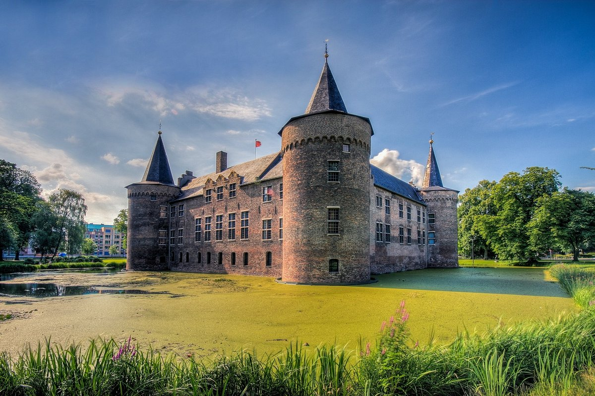
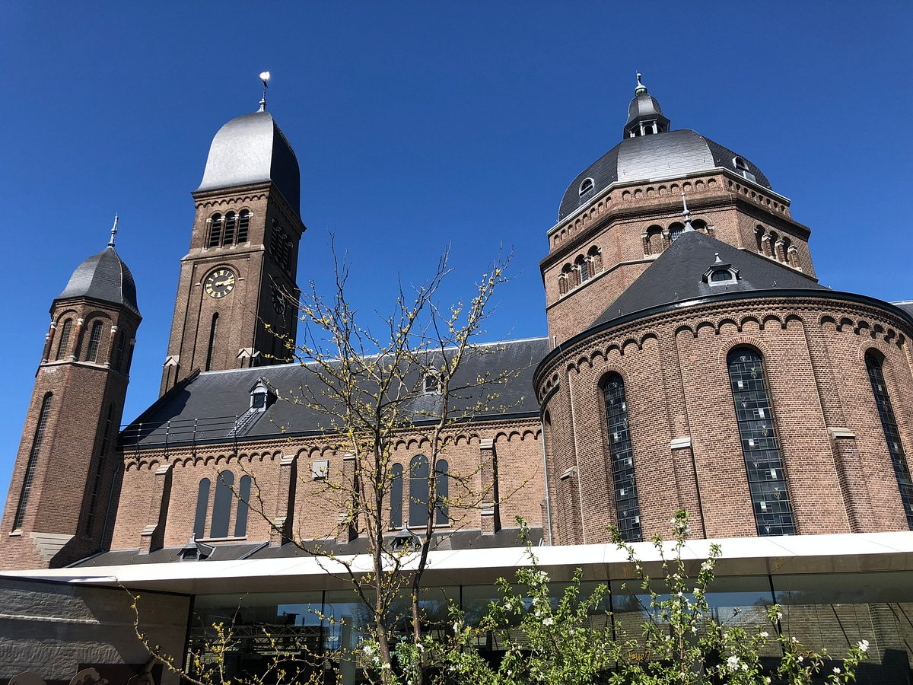

 Kasteel Helmond staat al bijna 700 jaar in het centrum van Helmond. Dit stadskasteel vertelt zijn eigen, bijzondere verhaal.
 Theater van Helmond in een voormalig kerkgebouw met een nieuwe glashal er omheen.